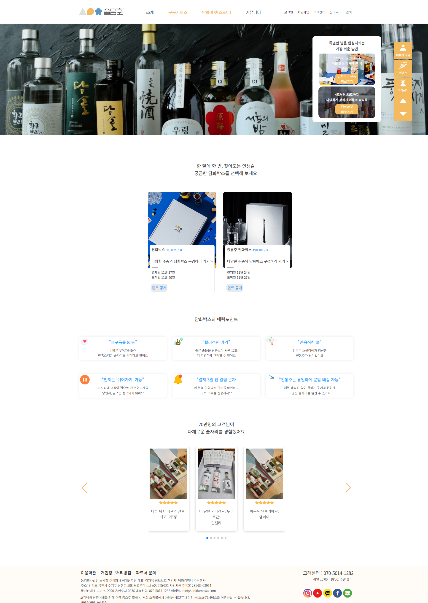
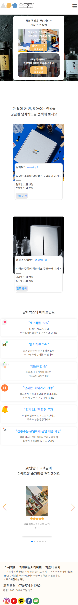

사이트 리뉴얼

"술담화" 사이트 리뉴얼 프로젝트입니다.
국내 최초이자 최대 전통주 구독 서비스를 운영하는 사이트 술담화. 전문 소믈리에들이 매월 진행하는 블라인드 테스트에서 엄선한 술만으로 구독 서비스를 운영합니다. 그리고 현대적인 감성의 전통주를 판매하고 있어, 중년층 뿐만이 아니라 젊은 세대들 또한 어렵지 않게 전통주를 접할 수 있습니다.
개인으로 진행된 프로젝트이며 html,css를 이용해 사이트를 제작했습니다. 반응형으로 제작되었으며, 마지막 섹션의 슬라이드는 pc버전에서는 세개씩 보이지만 모바일 버전에서는 하나씩 보이게 swiper 소스를 적용했습니다. 술담화의 브랜드 로고에 사용된 컬러인 파란색과 노란색을 포인트 컬러로 사용했으며, 전통주 구독에 초점을 맞춰 작업을 진행했습니다.
레이아웃 재구성과 시각적인 요소를 통한
사이트 정체성 부각
UI / UX 향상을 통한 사용자의 편의성 증진
플로팅 메뉴 배치와 상단 메뉴의 내용 추가 등을 통한
사용자의
편의성 증진